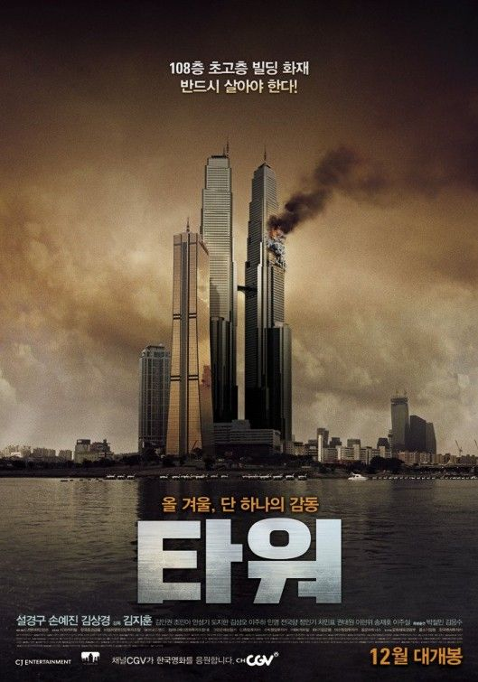
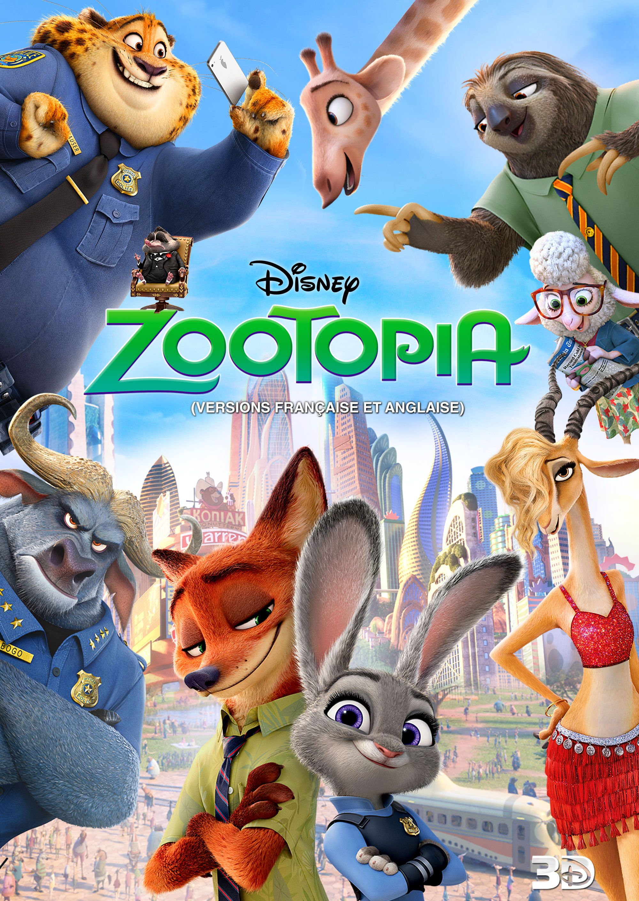

De mică mi-a plăcut să mă uit la filme, şi cu toate că majoritatea oamenilor se uită la filme/seriale des, am realizat că nu îmi place doar să privesc un film, ci şi să îl analizez,
să observ paleta de culori, modul în care joacă artistul căci într-un film bun nu este nici o scenă care să fie de prisos. Din aceste considerente, am devenit pasionată de cinematografie, în special de stage design. Mai jos voi scrie o listă cu top 5 filme care îmi plac nespus de mult, dar şi top 5 seriale care îmi plac cum au fost filmate din punct de vedere cinematografic.
Coperta
Denumirea
Anul lansării
Genul
Descriere
Ţara
Trailer
Spirited Away/
Călătoria lui Chihiro
2001
Fantastic
Spirited Away spune povestea lui Chihiro, o fetiţă ambiţioasă de 10 ani,
nefericită că familia ei îşi mută domiciliul şi va trebui
să-şi facă prieteni noi.Tatăl lui Chihiro se abate de la drumul spre casă
pentru a explora un tunel misterios din pădure.Pe partea cealaltă
pare să fie un parc de distracţie, dar de fapt este un oraş bantuit.
Fără să-şi dea seama, au ajuns în Lumea Spiritelor,
o lume cu scene de basm, locuită de zei antici şi fiinţe magice,
peste care domneşte vrăjitoarea Yubaba.Cu ajutorul lui Haku, este forţată
să-şi depaşească temerile şi să se alature unei lupte ca în poveşti,
pentru libertatea familiei ei.
Japonia

Tower
2012
Thriller
În ajunul Crăciunului, la luxoasa clădire cu turnuri gemene Tower Sky din centrul Seulului,
rezidenții și membrii personalului se ocupă cu pregătirea de Crăciun.
Un mic foc în bucătăria restaurantului atrage atenția membrului personalului de la Tower Sky, Lee Dae-Ho,
care observă un sistem defect, însă proprietarul clădirii nu ia în considerare avertismentul și continuă petrecerea de Crăciun.
Elicopterele sunt angajate pentru a incercui clădirea și a pulveriza clădirea cu zăpadă artificială în timpul petrecerii.
Locuitorii adunați pentru eveniment sunt uimiți de spectacol.
Uimirea lor se transformă curând în teroare când un elicopter pierde controlul și se prăbușește în clădire,
declanșând un lanț de evenimente oribile care amenință viața tuturor celor din clădire.
Coreea de Sud
Om Shanti Om
2007
Dragoste
Una dintre cle mai frumoase filme de dragoste din instoria filmelor.
Om, un artist junior din 1977, care are o acuzație de superstar în căsătorie secretă, Shantipriya.
Iubitul ei, producător interpretat de Arjun Rampal, o omoară într-un foc;
Om este martor la acest lucru și moare din cauza rănilor suferite de la încercarea de a o salva.
Reîncarnat ca superstar în 2007, el încearcă să-și răzbune dragostea.
India
Paddington
2014
Familie/Comedie
Paddington este povestea amuzantă a unui ursuleţ venit din îndepărtata junglă peruviană tocmai la Londra,
în căutarea unui cămin. Singur şi părăsit în gara din Paddington, realizează că e posibil ca viaţa în marele oraş
să nu fie aşa cum şi-a imaginat. Temerile îi sunt spulberate în clipa în care face cunoştinţă cu familia Brown.
Citind bileţelul pe care-l poartă atârnat de gât - pe care stă, scris de mână,
„Vă rog, aveţi grijă de acest ursuleţ. Vă mulţumesc”- ei îi oferă întâi un ceai, apoi o familie şi un acoperiş
deasupra capului. Se pare că norocul îi surâde lui Paddington - până când intră în scenă un personaj macabru,
a cărui singură dorinţă este aceea de a-l captura şi a-l împăia pentru muzeu.
Anglia

Zootopia
2016
Animație
Într-o lume populată de mamifere antropomorfe, iepurele Judy Hopps își îndeplinește visul copilăriei
de a deveni ofițer de poliție în Zootopia urbană. În ciuda faptului că Judy este cea mai bună din academie,
șeful Bogo se îndoiește de potențialul ei și o trimite la serviciile de parcare.
În prima ei zi, ea este lovită de un duo vulpe artist, Nick Wilde și Finnick. După ce ajunge să vadă cum este de fapt Nick,
aceștia devin parteneri în rezolvarea unui caz.
SUA
Parasite
2019
Thriller/Comedie
"Parasite", de Bong Joon-Ho, este un basm modern despre inegalităţile sociale din Coreea de Sud.
Şomeri, membrii familiei Ki-taek arată un interes deosebit pentru bogata familie Park,
până când într-o zi existenţele lor se împletesc. Acesta este începutul unui şir de întâmplări imprevizibile care
converg "într-un film genial, captivant şi care refuză categoriile", conform IndieWire.
Coreea de Sud
Coperta
Denumirea și nota acordată
Episodul/momentul preferat
Genul
Descriere
Ţara și anul apariției
Trailer
The Hounting of Hill House, nota 10
Episodul 6, filmat din 2 scene one take, fiecare de câte 16-17 minute. Episodul 9
Horror, Mister
The Haunting of Hill House este o reinterpretare a romanului cu același nume (de Shirley Jackson) și redă povestea unor frați care au crescut în cea mai cunoscută casă bântuită din țară. Ajunși adulți, aceștia sunt reuniți de o tragedie de familie, care îi readuce în casă și îi pune în situația de a înfrunta fantomele trecutului.
Seria este o complexă dramă de familie, care ia forma unei povești horror și care este regizată și produsă de Mike Flanagan, mintea din spatele unor producții precum Hush, Oculus, Gerald's Game..
SUA 2018
The Haunting of Bly Manor, nota 9.7
Episodul 3 și 8
Thriller, Horror
Producătorii serialului "Casa bântuită" ne prezintă următorul capitol al antologiei bazate pe povestirile cu fantome ale lui Henry James. Aceste 2 seriale l-au făcut pe Mike Flanagan regizorul meu preferat din toate timpurile. De la scenele, unghiurile, ideile și conceptele totul este atât de bun că nu îmi rămâne decât să recomand serialul acesta tuturor prietenilor
SUA 2020
Anne with an E, nota 9.5
Sezonul 2 e preferatul meu, in scpecial ep 8. Sezonul 3 ep 3, 10
Dragoste
Anne with an E sau Anne cu „e” la sfârșit este un serial canadian bazat pe o serie de cărți din același loc – Anne of Green Gables de Lucy Maud Montgomery. De-a lungul timpului s-au făcut diverse filme și chiar desene animate după poveste. Serialul adolescentin (sau poate chiar pentru copii) a fost creat pentru postul de televiziune CBC, fiind difuzat pe plan internațional în colaborare cu Netflix.
Anne, care insistă că sună mai elegant dacă are numele cu „e” la final, este o fetiță orfană de 13 ani. Datorită unor neînțelegeri provocate de transmiterea unui mesaj, ea ajunge să fie înfiată de doi frați trecuți bine de prima tinerețe.
Canada 2017-2020
Dark, nota 9
Sezonul 1 și 2 ramân preferatele mele, cel mai mult mi-au placut scenele din trecut
Thriller, Mister
Dark este, poate, cel mai complicat serial realizat vreodată. Producția germană gândită de Netflix are la bază paradoxul călătoriei în timp într-o buclă vicioasă de 33 de ani. Altfel spus acțiunea primului sezon se întâmplă în trei planuri temporale, aflate la o distanță de 33 de ani unul de celălalt: 1953, 1986 și 2019, toate având același nucleu de personaje, aflate în diferite perioade ale vieții.
Dark a fost anunțat recent ca fiind gândit pentru o trilogie, iar sezonul al doilea naște mai multe întrebări decât oferă răspunsuri. Însă înainte de a-i da play ar fi bine să-ți aduci aminte ce s-a întâmplat în prima parte, pentru că lucrurile sunt destul de confuze.
Germania, 2017-2020
Mr. Sunshine, nota 8.8
Momentele preferate
Dramă, Istoric, Romantic
Serialul s-a inspirat din evenimente istorice petrecute in contextul expeditiei americane in Joseon din anul 1871, a primei actiuni militare americane in regiune si a incidentelor de pe insula Ganghwa (situata pe coasta vestica a Coreei de Sud de astazi) din 1866, cand nava americana “General Sherman” e distrusa de coreeni, atragand interventia americana din 1871, in urma careia 350 de coreeni isi pierd viata. Pentru Joseon, acest moment al istoriei s-a dovedit crucial, deoarece regentul acelor timpuri, Daewon-gun (nimeni altul decat tatal viitorului rege Gojong), si-a intarit politica de izolare, pana in momentul in care Joseonul a ajuns sa semneze un tratat comercial cu Japonia.
Cu un buget uriaș (peste 1 milion de dolari per episod), „Mr. Sunshine” a atras atenția încă de la început: filmări făcute în patru anotimpuri, în toată Coreea de Sud, un casting de excepție, costume de epocă și scene de război, utilizarea unui număr uimitor de figuranți străini și niște platouri de filmare imense, efecte speciale pe măsură